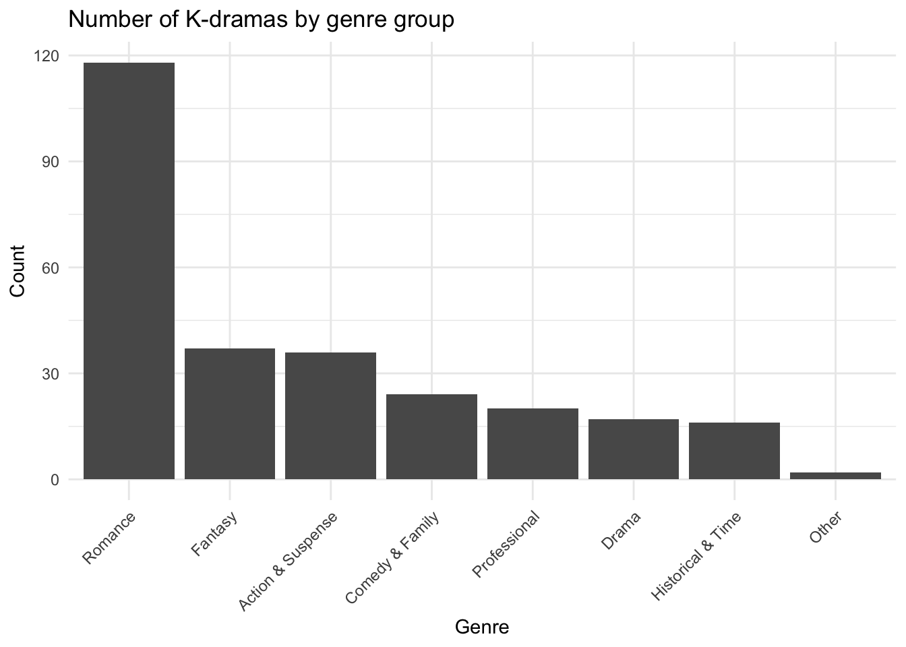
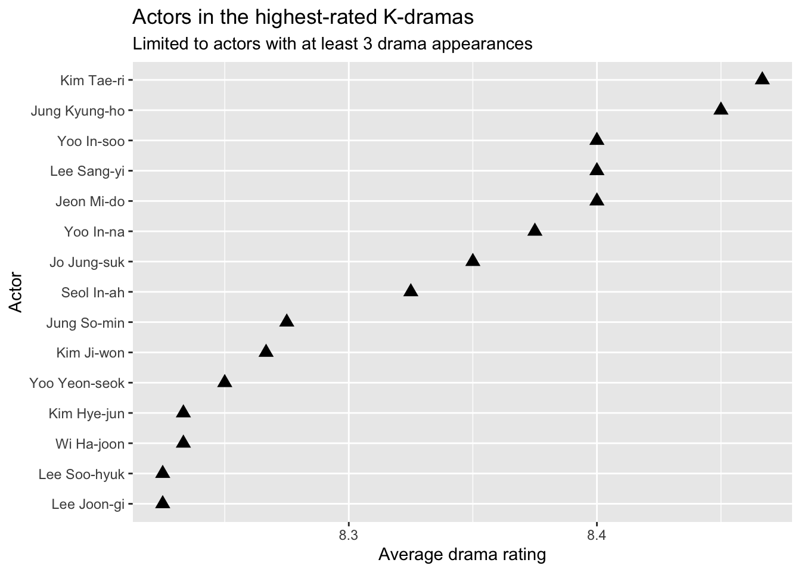

Code
library(tidyverse)
library(ggplot2)
kdrama <- read.csv(
"https://raw.githubusercontent.com/apoorvareddy612/Kdramas_Analysis/main/kdrama.csv")Analysis of K-dramas
Molly Liao
October 13, 2026
I am a big fan of Korean dramas, in this project I want to explore the data from Kdramas_Analysis to answer the follwing questions: - What are the most common genre among these series - Which actor is involved in the most dramas
In this project, I will use:
at least 3 different str_*() functions
at least 1 fct_*() function
at least 3 regular expressions
at least 1 lookaround
at least 2 illustrative, well-labeled plots or tables
a description of what insights can be gained from your plots and tables
These are the main genres (genre1) of the kdramas listed in the data.
#splitting up the genre
kdrama <- kdrama |>
mutate(
#breaking down the genres
genre1 = str_extract(Genre, "\\w+"),
genre2 = str_extract(Genre, "(?<=,)[^,]+"),
genre_remainings = str_extract(Genre, "(?:[^,]*,){2}[^,]+$"),
genre2 = str_trim(genre2)) #to remove whitespaces
#see what are the main genres
kdrama |>
pull(genre1) |>
unique() [1] "Fantasy" "Romance" "Workplace" "Action" "Legal"
[6] "Drama" "Sports" "Comedy" "Crime" "Family"
[11] "Science" "Horror" "Dark" "Coming" "Mystery"
[16] "Medical" "Historical" "Thriller" "Suspense" "Musical"
[21] "Slice" "Revenge" "Time" #combining the less frequent genres
kdrama <- kdrama |>
mutate(
genre_group = fct_collapse(
as.factor(genre1),
`Action & Suspense` = c("Action", "Thriller", "Suspense",
"Mystery", "Crime", "Revenge", "Dark", "Horror"),
`Comedy & Family` = c("Comedy", "Family", "Coming", "Slice"),
Professional = c("Workplace", "Legal", "Medical", "Science"),
`Historical & Time` = c("Historical", "Time"),
Other = c("Sports", "Musical")))
#bar graph showing the count of genres
ggplot(kdrama, aes(x = fct_infreq(genre_group)))+
geom_bar()+
labs(
title = "Number of K-dramas by genre group",
x = "Genre",
y = "Count") +
theme_minimal() +
theme(
axis.text.x = element_text(
angle = 45,
hjust = 1))
The bar graph above shows the count of each genre (group). Out of the 23 main genres, only “Romance”, “Fantacy”, and “Drama” were not grouped. While there are many different genres in kdrama, “Romance” remains the main theme across 270 dramas.
Drama.Name Actors Rating.Out.of.10.
1 Legend of the Blue Sea Jun Ji-hyun 8.1
2 Legend of the Blue Sea Lee Min-ho 8.1
3 The Heirs Lee Min-ho 7.5
4 The Heirs Park Shin-hye 7.5
5 The Heirs Kim Woo-bin 7.5
6 The Heirs Park Hyung-sik 7.5#actors performance statistics
actor_summary <- actor_data |>
group_by(Actors) |>
summarize(
drama_count = n_distinct(Drama.Name), #count the number of distinct dramas one participated in
avg_rating = mean(Rating.Out.of.10., na.rm = TRUE),
.group = "drop") #count the average rating among their dramas
head(actor_summary)# A tibble: 6 × 4
Actors drama_count avg_rating .group
<chr> <int> <dbl> <chr>
1 Ahn Bo-hyun 5 7.88 drop
2 Ahn Da-eun 1 6.8 drop
3 Ahn Do-gyu 1 6.8 drop
4 Ahn Dong-goo 1 7.7 drop
5 Ahn Eun-jin 2 8.65 drop
6 Ahn Hyo-seop 5 7.58 drop #scatterplot showing the top 15 actors with the highest average rating dramas
actor_summary |>
filter(drama_count >= 3) |>
slice_max(avg_rating, n = 15) |>
ggplot(aes(
x = avg_rating,
y = reorder(Actors, avg_rating)
)) +
geom_point(
size = 3,
shape = "triangle"
) +
labs(
x = "Average drama rating",
y = "Actor",
title = "Actors in the highest-rated K-dramas",
subtitle = "Limited to actors with at least 3 drama appearances"
)
The graph above illustrates the top 15 actors who appeared in at least 3 dramas that has the highest average rating (not their personal performance but their acting could be the reason for the high rating). Dramas that Kim Tae-Ri took part in have the highest average rating of all; as someone who is a huge fan of her acting, I am more than happy to observe this result.
I am interested in doing more analysis with this dataset. Stay tuned for more update.
---
title: "Kdrama Data"
description: |
Analysis of K-dramas
author: Molly Liao
date: October 13, 2026
format:
html:
code-fold: true
code-tools: true
source: true
code-overflow: wrap
execute:
warning: false
message: false
---
I am a big fan of Korean dramas, in this project I want to explore the data from [Kdramas_Analysis](https://github.com/apoorvareddy612/Kdramas_Analysis/blob/main/kdrama.csv) to answer the follwing questions:
- What are the most common genre among these series
- Which actor is involved in the most dramas
In this project, I will use:
- at least 3 different str_*() functions
- at least 1 fct_*() function
- at least 3 regular expressions
- at least 1 lookaround
- at least 2 illustrative, well-labeled plots or tables
- a description of what insights can be gained from your plots and tables
```{r}
library(tidyverse)
library(ggplot2)
kdrama <- read.csv(
"https://raw.githubusercontent.com/apoorvareddy612/Kdramas_Analysis/main/kdrama.csv")
```
These are the main genres (genre1) of the kdramas listed in the data.
```{r}
#splitting up the genre
kdrama <- kdrama |>
mutate(
#breaking down the genres
genre1 = str_extract(Genre, "\\w+"),
genre2 = str_extract(Genre, "(?<=,)[^,]+"),
genre_remainings = str_extract(Genre, "(?:[^,]*,){2}[^,]+$"),
genre2 = str_trim(genre2)) #to remove whitespaces
#see what are the main genres
kdrama |>
pull(genre1) |>
unique()
#combining the less frequent genres
kdrama <- kdrama |>
mutate(
genre_group = fct_collapse(
as.factor(genre1),
`Action & Suspense` = c("Action", "Thriller", "Suspense",
"Mystery", "Crime", "Revenge", "Dark", "Horror"),
`Comedy & Family` = c("Comedy", "Family", "Coming", "Slice"),
Professional = c("Workplace", "Legal", "Medical", "Science"),
`Historical & Time` = c("Historical", "Time"),
Other = c("Sports", "Musical")))
#bar graph showing the count of genres
ggplot(kdrama, aes(x = fct_infreq(genre_group)))+
geom_bar()+
labs(
title = "Number of K-dramas by genre group",
x = "Genre",
y = "Count") +
theme_minimal() +
theme(
axis.text.x = element_text(
angle = 45,
hjust = 1))
```
The bar graph above shows the count of each genre (group). Out of the 23 main genres, only "Romance", "Fantacy", and "Drama" were not grouped. While there are many different genres in kdrama, "Romance" remains the main theme across 270 dramas.
```{r}
#creating new dataframe for actors
actor_data <- kdrama |>
select(Drama.Name, Actors, Rating.Out.of.10.) |>
#split up the Actors string into rows, each row is an actor in a kdrama
separate_longer_delim(Actors, delim = ",") |>
mutate(Actors = str_trim(Actors)) #trim whitespace
head(actor_data)
#actors performance statistics
actor_summary <- actor_data |>
group_by(Actors) |>
summarize(
drama_count = n_distinct(Drama.Name), #count the number of distinct dramas one participated in
avg_rating = mean(Rating.Out.of.10., na.rm = TRUE),
.group = "drop") #count the average rating among their dramas
head(actor_summary)
#scatterplot showing the top 15 actors with the highest average rating dramas
actor_summary |>
filter(drama_count >= 3) |>
slice_max(avg_rating, n = 15) |>
ggplot(aes(
x = avg_rating,
y = reorder(Actors, avg_rating)
)) +
geom_point(
size = 3,
shape = "triangle"
) +
labs(
x = "Average drama rating",
y = "Actor",
title = "Actors in the highest-rated K-dramas",
subtitle = "Limited to actors with at least 3 drama appearances"
)
```
The graph above illustrates the top 15 actors who appeared in at least 3 dramas that has the highest average rating (not their personal performance but their acting could be the reason for the high rating). Dramas that Kim Tae-Ri took part in have the highest average rating of all; as someone who is a huge fan of her acting, I am more than happy to observe this result.
I am interested in doing more analysis with this dataset. Stay tuned for more update.